Your browser doesn't support the features required by impress.js, so you are presented with a simplified version of this presentation.
For the best experience please use the latest Chrome, Safari or Firefox browser.
Many Tools to choose from ~ Addy Osmani
Craftsmanship is choosing tools well. Difference between a developer that spends 45 minutes getting workflow setup for project and one that spends only 5. ~ Addy Osmani
We're seeing the emphasis shift from valuing trivia to valuing tools ~Rebecca Murphey
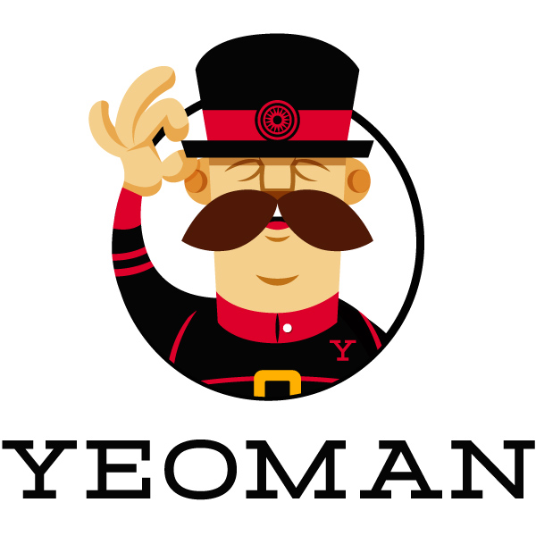
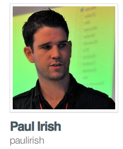
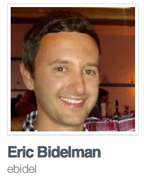
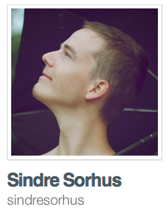
... and me...
This is where we show the numbers! (and beautiful graphs :p)
https://github.com/yeoman/yeoman/graphs/commit-activity
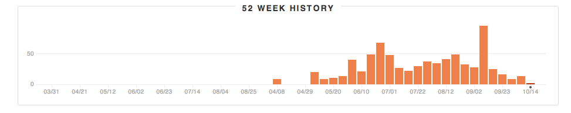
https://github.com/yeoman/yeoman/graphs/code-frequency
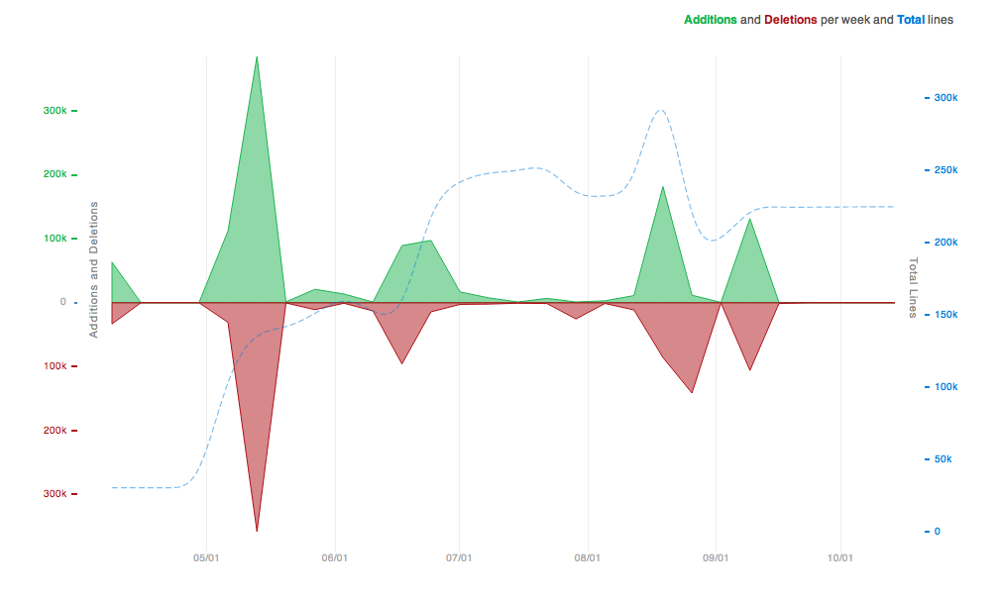
https://github.com/yeoman/yeoman/graphs/punch-card
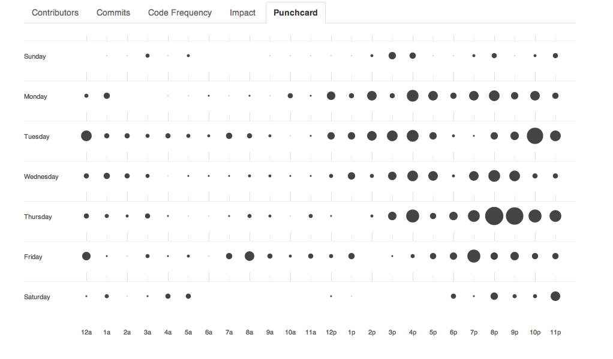
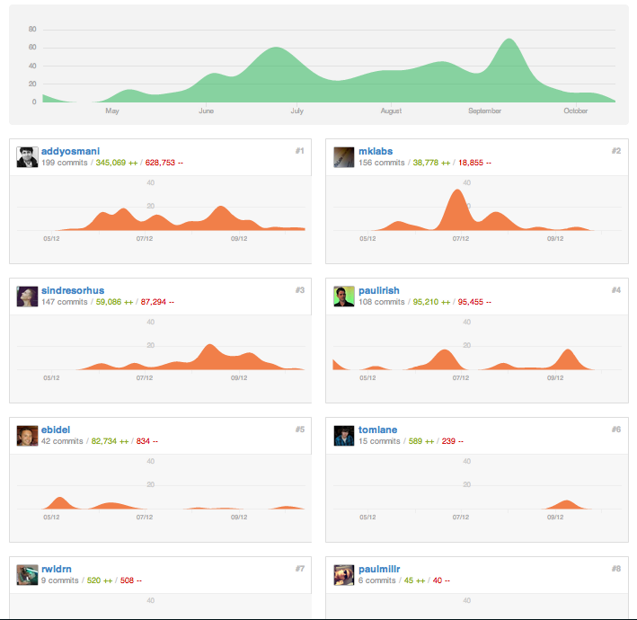
git contrib self
Mickael Daniel (176):
Add --noprompt option for init task to bypass all the prompts
Slight changes to the cli tests
Rework the test helpers to setup the .test dir before each tests
Tests for the build: tasks (and default one)
Css task - do the minification once inline imports are done
Tests for the css task
Tests for the html task
Tests for the img task
Tests for the tar task
Usemin task - Rework the task to also do the replacement in stylesheets
Tests for the usemin task
Tidy up the cli test/fixtures files
Remove old init task and related files, now using yeoman init template
Change default init template to yeoman's, when yeoman init is run
Add a new init template, with remotes/ project repo handler
npm i grunt-jasmine-task -S
Load jasmine task from our nodemodules
Add jasmine 1.2.0 files to be copied during init task
Add the according Jasmine runner and environment
init - Minor fix to the Gruntfile template
test - update fixtures, make sure to merge defaults
Rework the server task to be livereload compatible
init - tweaks to defaults template and remotes to bypass during tests
test - increase mocha timeout (mostly for first run / remote fetch)
bin - bypass insight prompt when run as test
test - update init assertions to catch up with the new init structure
test - fix img test, add expected .gitignore file for img dir
test - fix css test, check against main.css, update expected file
test - fix usemin test, update revision of files for expected fixtures
A start on this generator idea, really rails inspired.
Initial internal plumbing for loading in and starting generators
Add a bit of Grunt API available in generators, and a first controller
Add argument API for generators, creates an attribute getter for it.
Add a NamedBased generator to extend from
Further work on the generator API, ensure source / dest path
yeoman application generator stub
Initial support of hook mechanism for generators (basic)
sass generators, copying compass_twitter_bootstrap to destination
Generator API for directory copy, add generator app hooks
shorter directory copy src / dest dance
Make sure to prevent generator from running on missing argument
Show help on missing required argument, USAGE file if any
Also show help if --help was specifically passed
Fixup the description and generator name for default desc
Help output and list available generators
Merge branch 'master' of github.com:yeoman/yeoman into generators
Add new command. Shortcut for yeoman generate app
Keep track of loaded path to print them when no generator were found
Process each files during directory copy as template
warn user if they miss yeoman installed locally
Also expand to hidden files during directory copy
Add a Generator Generator.. :)
Add a js-framework hook, prevent loading of name only
Bootstrap generator
Load in generators from a yeoman- npm module
Merge remote-tracking branch 'upstream/master' into generators
Few tweaks: bootstrap usage file, load for name only when no lookups
Fix help output and generator list generators loaded twice
Add g as an alias to generate
A start on ember generators, bootstrap and view are functional
Slightly better log output, file write and invoke at least
Do the verbose flag switch at grunt.file.write level
Few doc updates
Better log output
Removed handlebars generator, might readd if we hookFor "template-engine"
Support as option on hookFor
Renamed bootstrpa generator to js, and moved up to yeoman's dir
Finish up the ember.js generators (mostly inspired from ember-rails)
hook for js-framework in app generator
Add the jasmine generator to setup the test/ directory
Mocha app generator
Missing lib/ prefix on assetion library in mocha templates
deps: Add grunt-mocha
Mocha generator - fix the runner in headless env, new api.
Add a basic suite (to be replace by app specs) to the generated mocha env
Have the generated app Gruntfile to atcually use the test-framework property
Coffee support for generators
Merge remote-tracking branch 'upstream/master' into generators
Merge remote-tracking branch 'upstream/master' into generators-coffee
Update paths to match the new file structure
Minor updates to generated gruntfile, comments.
App generator index.html file, basic copy.
Fixing the use of new thing/, cleaning name and reworked arguments a bit
Fix index.html copy location (must be below app/)
First work on usemin-handler based off necolas idea / initial work
Trigger the reving of files on usemin-handler
Trigger rjs:optimizer on data-main with usemin-handler
Add sample file for usemin-handler tests
Add desc method, and usage / description with help output
Hide mocha:app and few tweaks to lookup paths
App generator - clean trailing slash only when name provided
Add option method and better help output based on arguments / options
Update ember generators USAGE files and array option
General options in Base constructor via option method
Changed the way hookFor invokes other controller, must be used in ctor
Follow up hooks and output their options with help
Dasherize mocha generator options
First batch of doc updates for generators
Generate manpages via ronnjs, add a doc/ dir and generated man/ folder
Merge branch 'generators-coffee' into generators
Get back to js for app generator
Async handler for generators (and hooks). Use this.async()
Added new generator methods: tarball, fetch and remote
Merge remote-tracking branch 'upstream/master' into generators
generators - fixing the undefined config when "hooked" for
generators - hookFor must be used within the constructor only
init - delegate the groundwork of scaffolding to the generator layer
generators - add helper, prompt, promptFor, promptForObj API
generators - few fix / tweaks
Merge remote-tracking branch 'upstream/master' into generators-test
generators - Initial tests for generators
generators - test for generators, 76 tests with 69 pendings..
generators - init / invoke should return the specified generator all the way through
generators - generators.prepare/init tests. init still has some pendings
deps - remove reference to ncp
deps - remove direct references to underscore, use grunt.util.
deps - remove direct references to async, use grunt.util.async
generators - minox fix in simpleapp gen with async handler, and .humanize
deps - match connect / prompt deps to the exact same version than grunt's deps
Merge remote-tracking branch 'upstream/master' into dep-tree
tasks - server, minor change to instanceof check
test - initial work on the test refactoring
test - Add a Runnable object helper to help with cli prompts / output asserts
generators - Minor changes to wiring.js
generators - wiring: API to generate attributes from hash options
generators - Minor changes to simpleapp generated index.html file
generators - simpleapp rjs fetch, change to rjs config
tasks - cleanup build targets a bit and slightly change inspect helper
tasks - move tasks/h5bp.js -> tasks/yeoman.js
tasks - html, minor changes to match new inspect helper api
tasks - rjs changes to allow name / out config, rm sandbox for paths
tasks - usemin-handler, log blocks & config, tweaks to amd match
test - allow multiple expectations with runnable helper
tasks - updates manifest / server task & helpers
tasks - print the list of task to run in build task
test - test most of the expected stdout result for the build task
test - cleanup the test/ directory
minor changes to conform to code style
test - runnable, also attach stderr or stdout to errors raised
tasks - bower, reworked the task to use bower programmatically
package.json - force engine to 0.8.0 and above
deps - switch bower deps to npm
generators - change bower.dir to app/js/vendor in simpleapp Gruntfile
test - slighly more global regexp on expected prompt and rjs output
test - remove --silent flag from npm test
manifest - force path.resolving of path to avoid Forbidden error
manifest - better test expectation for the manifest task
generators - move defaulting logic for simpleapp to grunt template layer
generators - ability to warnOn at runtime, per generator
test - generators actions
test - generators base
test - udpate globals and remove $ as implied
jshint - minor changes in bower / manifest tasks for unused variables
server - slight changes to server task to also serve files from temp/
server - change target prod -> dist
server - setup some error handling, per target basis if needed
build - slight change in tasks ordering, clean coffee compass mkdirs ...
server - add a new "reload" task, prevent browser opening and force port to 35729
test - make them pass
Fix tests - make them work without PhantomJS and Compass
tests - remove generators tests, now in their own repo
test - replace stdout checks and test against the file system
Make sure it pass with env without compass installed
test - add tests for bower task
test - add implied globals from es6-collection
test - add implied globals from cheerio
test - add tests asserting path dependant configuration values
misc - get rid of yeoman.utils
config - Add initial bits of config logic, based on config-chain
config - add defaults and process config keys as a template if necessary
config - pass config snapshot as generators options
generator - wrap init into try / catch, ensure exists on error
manifest - use phantomjs helper instead of spawn
config - updates to rjs task and proper config init on build
server - updates to pull path values from config
server - pass server: target to internal yeoman-server:*
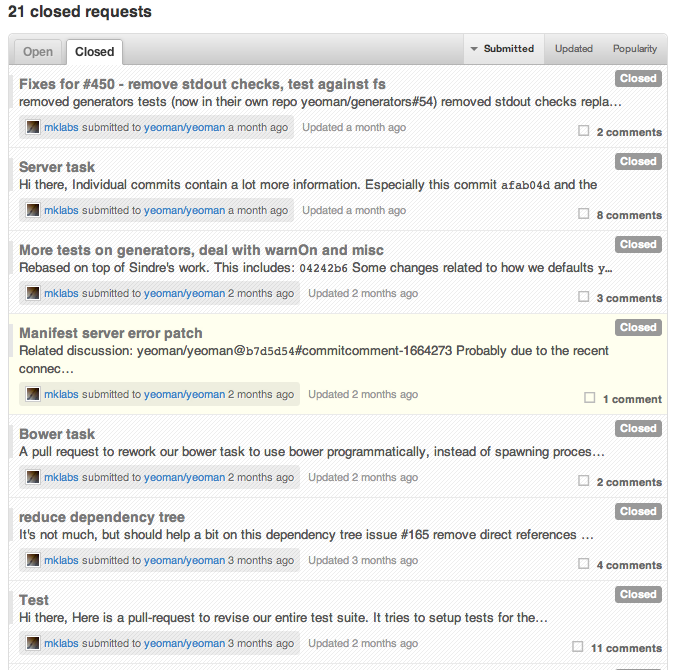
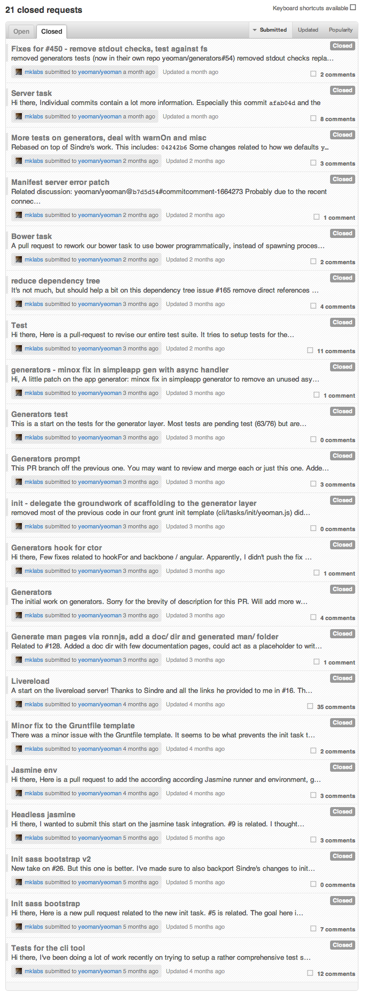 Moar!
September 10, 2012
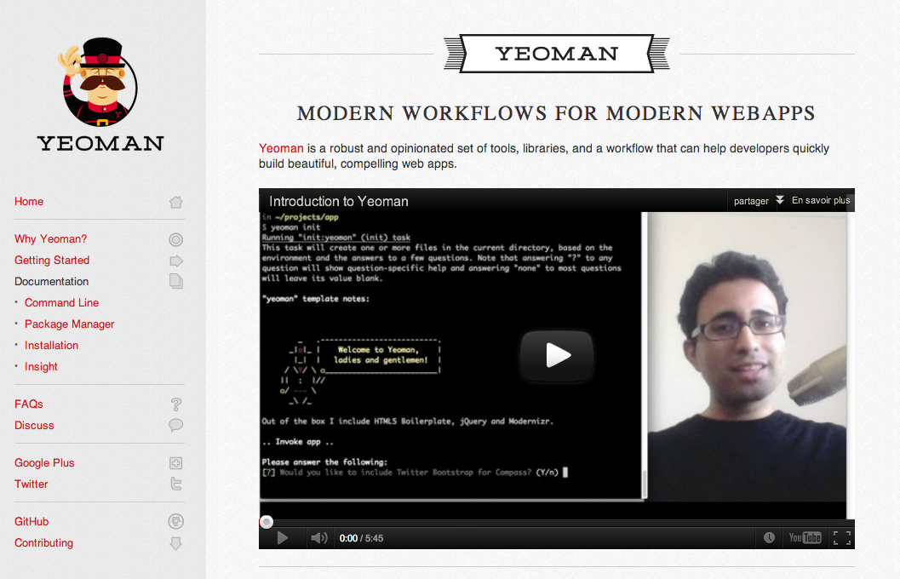
The Yeoman CLI presents a command-line interface for creating, building, maintaining, and shipping a project.
Abstraction on top of
Bower is a package manager for the web. Bower lets you easily install assets such as images, CSS and JavaScript, and manages dependencies for you.
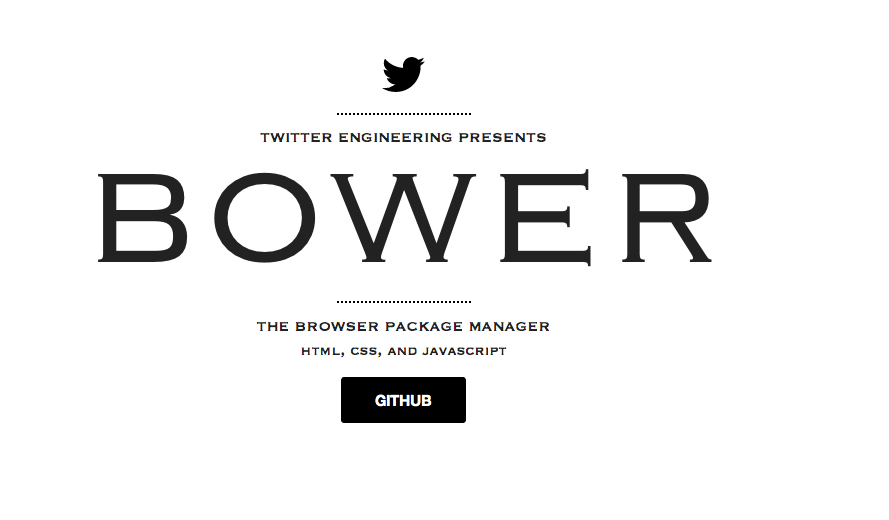
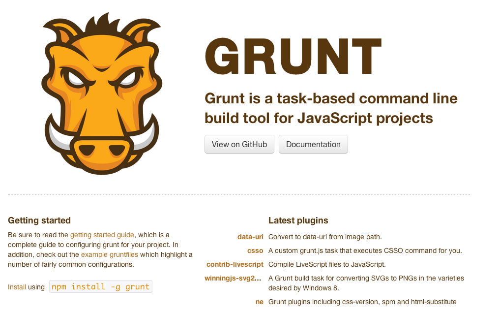
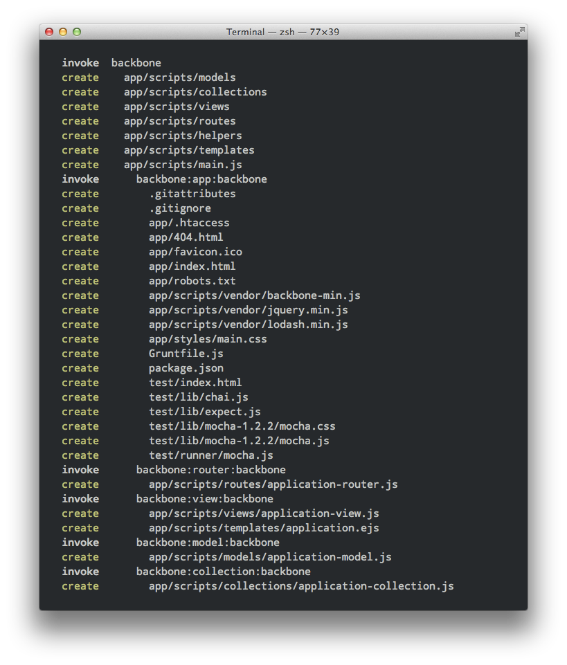
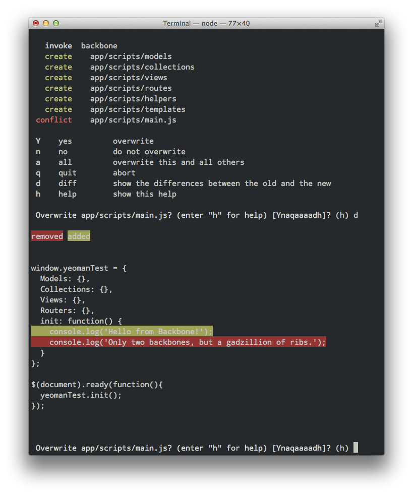
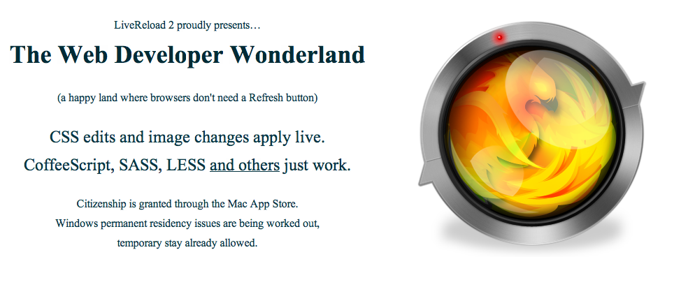
We think you should go from idea to rough prototype in 10 min
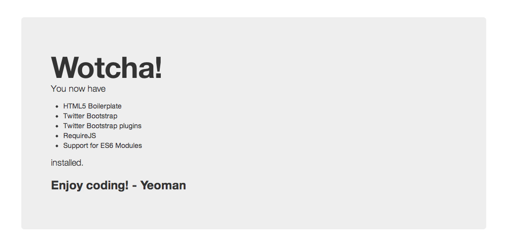
Yeoman is an open source set of tools to accelerate building compelling webapps.
.
├── package.json
├── Gruntfile.js
├── app
│ ├── 404.html
│ ├── favicon.ico
│ ├── images
│ ├── index.html
│ ├── robots.txt
│ ├── scripts
│ ├── components
│ ├── styles
│ └── templates
├── dist
├── temp
└── test
├── index.html
├── lib
├── runner
└── spec
Built on top of Grunt
Abstractions
Modules
Boilerplates
Testing & Build Process
Built on top of Bower
How about...
yeoman install backbone
yeoman install backbone.localStorageyeoman update backbone
Inspired by Rails3 Generators.
We're including a bunch of generators out of the box to get you started.
Generators can be written for any framework or workflow
Backbone
Bbb
Ember-starter
Ember
Mocha
Testacular
... Demo? ...